Pictures from around 2005
"Archive 2016-2017"
"Archive 2015-2014" "Archive 2013-2012" "Archive 2011"
"Archive 2010" "Archive 2009" "Archive 2008"
"Archive 2007-2006" "Archive 2005-2004" "Archive 2003"
On Tuesday, April 18 we attended a
Crawfish Boil at Cole's Garden.
Here's, Eric doing the meet and greet thing with crawfish guts on his hand.
<Group photo removed>
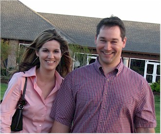
Todd & Brandi
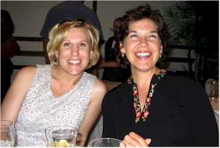
K & Me
On Easter weekend Eric went
climbing at Horseshoe Canyon Ranch
and I went home to visit my family in Westville, OK.
Here, my sister and I play a rousing game of miniature golf in Fayetteville, AR.
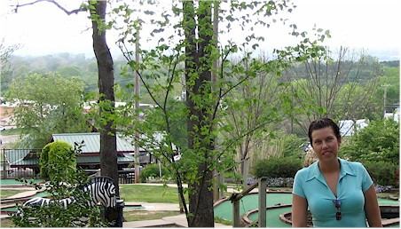
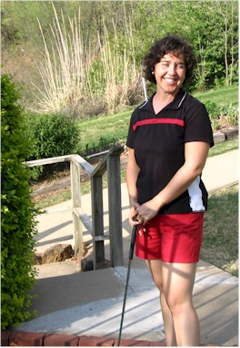
Desirae with a Zebra sneaking up on her through the
bushes.
Me, demonstrating how I play with my eyes closed.
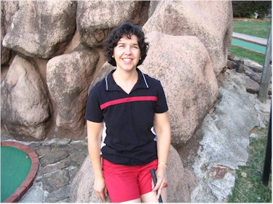
Here I pose on the fake rocks. Still having issues keeping my eyes open.
On Thursday, April 6 we
attended The Chef's Feast
I always love attending this event - all the best chefs in town provide
their best food.
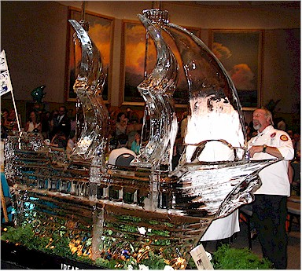
The ice sculpture
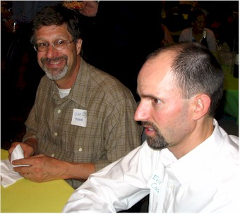
Eric, looking like he doesn't quite believe what he's hearing
Cliff Hanoch looks on, enjoying it all.
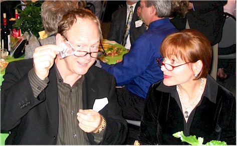
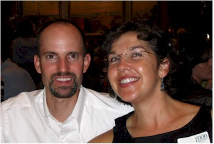
They sell cubic zirconia 'jewels' but one of them is a real diamond. Ted & Jane think I may have a winner! (I do, but it's my husband, not the diamond.)
On Sunday night, April
2nd Church of the Harvest had it's
3rd live worship album recording. This one is going to be the best one
yet.
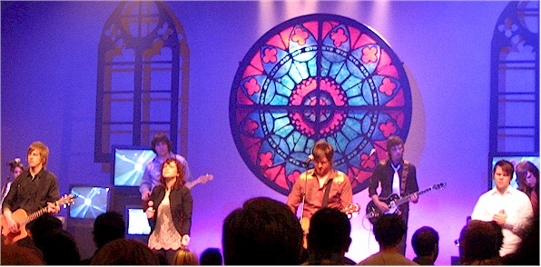
Our friend Cindy Quinn and
husband Barry were back in town for
a few days. That was an event worth celebrating with a group meal!

A double tulip and some hyacinths that I particularly liked in our back yard. March 2006.
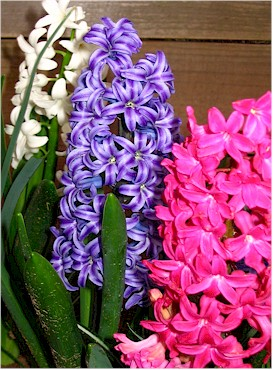
We got a little snow on Wednesday,
March 23 (2006)
I went out early that morning before I left for work to snap a few pictures.
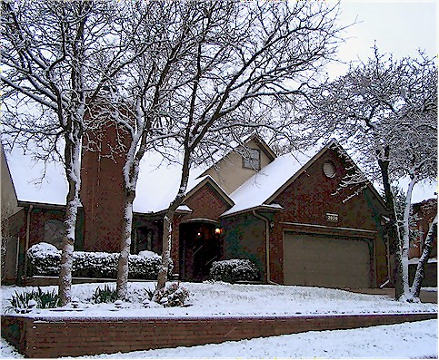
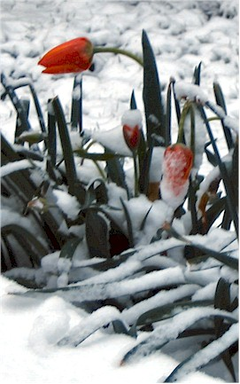
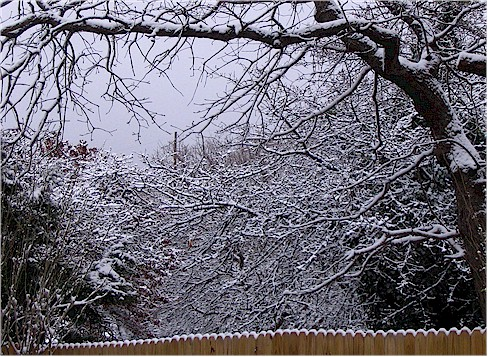
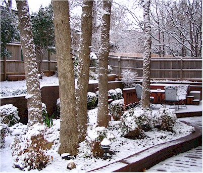
Here are our good friends Cassy
& (the famous) Luc
with their new baby Jess. Isn't she a sweetie?
(By the way, normally her eyes do not shine like that.)

Here, Eric is getting mauled by a happy puppy.
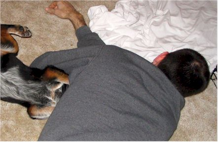
OK, I apologize for the poor photo quality in these next
few pictures.
I wasn't allowed to use my flash.
This is Big Daddy Weave -
they came to a
very small church in Edmond on the 11th. It was a really awesome show.
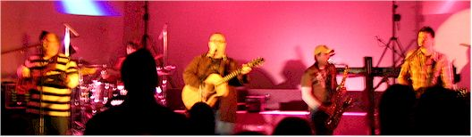
This was Matt Redman
& Chris Tomlin
I saw them on the Indescribable Tour in Bethany, OK on Friday the 10th.
It was a really good show and I sat by very nice people.
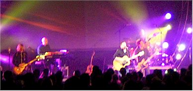
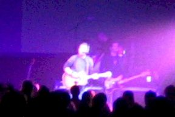
Gran had some surgery in late
January.
She's fine now, thank God.
Here are two pictures from a Saturday trip I made back home to see Gran
& my family.
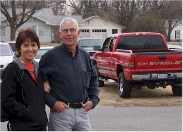
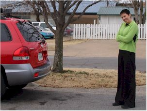
This is Mom & Dad with Dad's pretty red truck + the rear end of my new car and my sweet sister Desirae
An amazingly calm day of kayaking at my "Happy Place" - Lake Arcadia
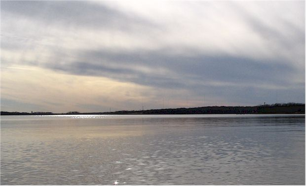
Two, two - two birds in one
(Hey, I never claimed that these comments were good!)
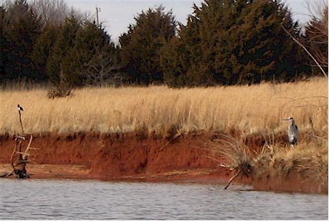
On Saturday, Jan 28th we went to
the PBR Classic
(Professional Bull Riders) at the Ford Center in OKC
For our date, we took our friend K since her husband had abandoned her for
the weekend.
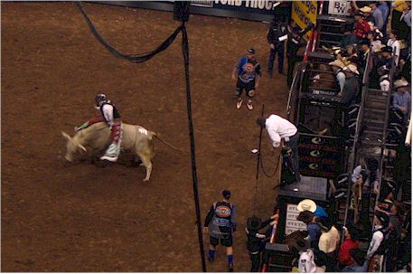
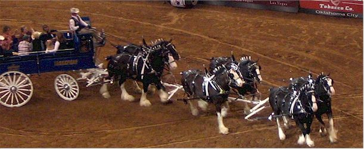
Rocky: the gi-normous inflatable bull.
I had been thinking something was missing
from the evening and then they brought him out.
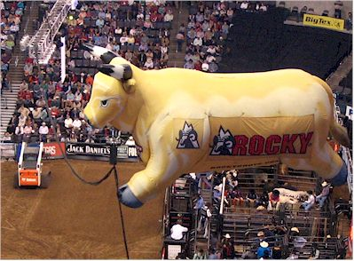
On Wednesday the 18th we went
to a
Hornets game with our friends the Callantines
Our friend got great seats for us in the Chesapeake section - thanks a bunch!
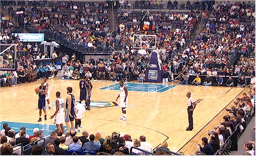
On January 14 I went to a Bon Jovi
concert in the Ford Center with some friends.
Here we are: Jennifer (K's friend in visiting from Tucson), K,
me, and Bridgett
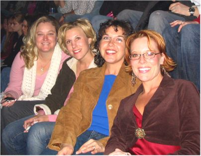
On the left is a (dark) shot of the whole band.
On the right is the jumbo-tron picture of Ritchie & Jon singing a
duet,
with a (dark) shot of the two of them in the lower right corner of the
picture.
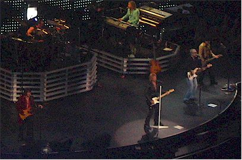
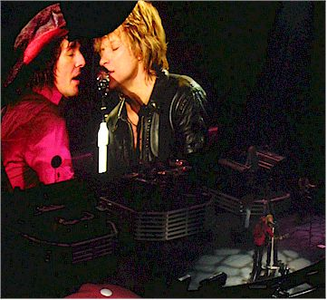
Jon Bon Jovi kept popping up in the middle of the crowd at
different times in the show.
He started the show directly in front of us, then later sang straight across
from us.
It was a good concert. They haven't slowed down much over all these
years!
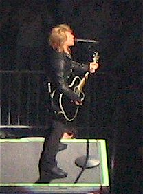
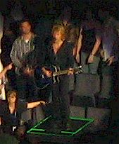
January has been an amazingly warm
month this year.
Imagine my surprise when I woke up to find snow one morning.
It only lasted until lunchtime, but it was very pretty.
This is looking back at our house as I drove to work that morning.
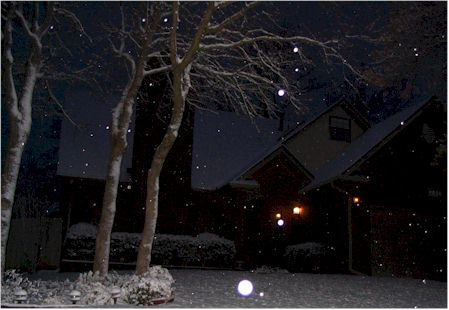
My new car - an '05 Hyundai Santa Fe
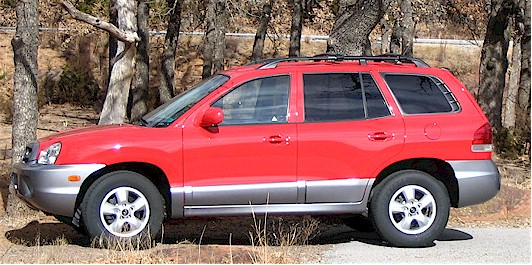
Scenes from the GHK employee Christmas Party
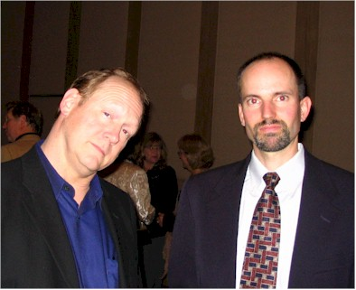
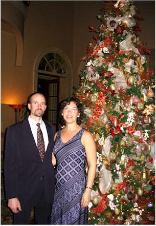
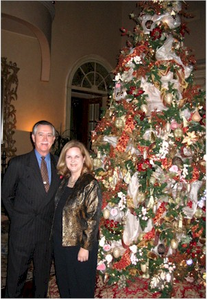
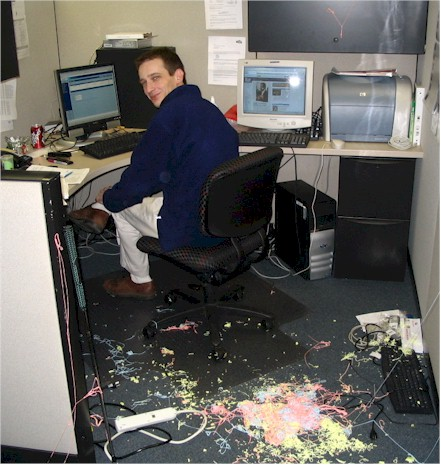
happens when his co-workers take revenge while armed
with Silly String.
Here are some scenes from a Christmas party with David, Nancy, and Lane Godsey
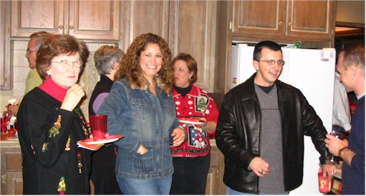
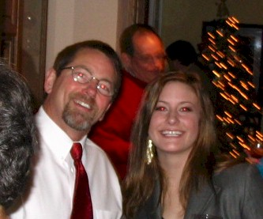
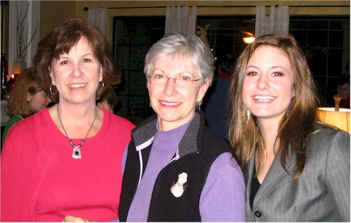
Our good friend Cameron Hogan
graduated from college in December.
Here are scenes from his celebration get-together at the Bourbon Street
Cafe.
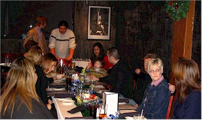
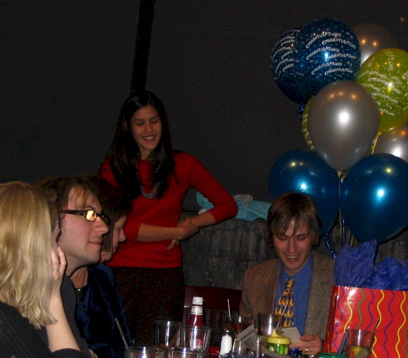
We visited the Callantines
for dinner one night in December.
Here are some scenes of their house and our visit.
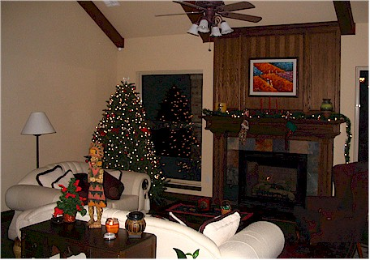
Here's a look at some of our Christmas decorations this year
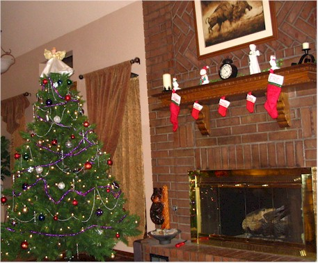
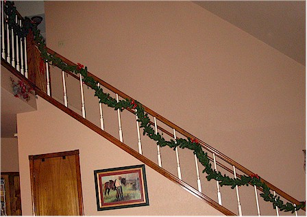
Dorinda - My best friend
since 5th Grade
She came to see me the weekend of the 12th
and we had a very nice time visiting and catching up.
Here are some pictures taken on the night of Eric's 2nd Degree Black Belt test.
These are the Black Belts from
Eric's Tae Kwon Do school - Dragon Kim's
Master Kim is the 3rd from the left in the picture.
Eric is 2nd from the right.
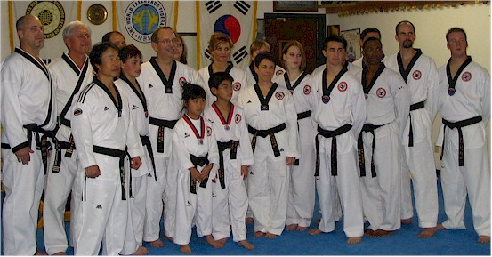
Eric & buddy D'Angelo showing off
their matching
ice bags on swollen
knuckles. (They both had to
break
multiple boards as part of their
test.)
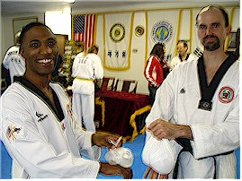
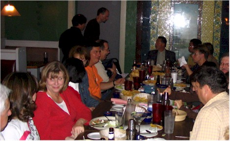
This is Dandy, a neighbor cat
that we particularly love.
He flys to us whenever he sees us as if we're the greatest thing ever.
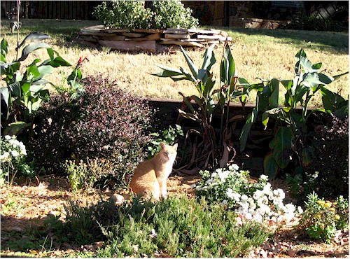
Greek Fest 2005 with K and Jim
OK, I keep saying Cindy is moving away - I really mean it this time!
I had book club at my house in September and it was my
last chance to see Cindy before she moved.
This is her with Amanda above.
These are some pictures from some of my paddles on Lake Arcadia this summer.
and his girlfriend Laura Wilhite are very
talented musicians. This was Steve doing
a solo show at the Full Circle bookstore in OKC.
More info on Steve can be found on his site.
In August I participated in the Outdoor
Expo at the Lazy E Arena in Guthrie.
It was a neat experience, and quite an adventure. I was waist-deep in
the kayak
pond for 4 hours - getting whacked with paddles and run into by kids in
kayaks.
But I survived! And hopefully we created some future kayak enthusiasts
along the way.
For more pictures (like the first one in this group) visit the Oklahoma City Outdoor Network site.
These are pictures from my friend Cindy
Quinn's going-away party in August.
We met at Catherine Campbell's for a very nice send-off for Cindy. We
all miss her very much.
This is Cindy & Amanda on the left, and the whole rowdy crew on the right.
In August, my sister Desirae and
her friends Nancy Wolf + Team James came to
town for the American Idol concert. I got to spend the afternoon with
them the next day. Here we are at lunch.
They were shooting a movie in the mall here in town.
Here we are,
getting the inside scoop on how showbiz magic is made.
A picture of one of my book clubs - Novel
Women. This was taken in July for Gala's last meeting before she
moved away.
Gala is in the center in the striped shirt. Cindy Quinn, in blue to
the left of Gala has since moved away as well. We miss them!
In June I attended a party at friend Kirby
Junge's house.
It was mostly fellow kayak-enthusiasts so I learned a lot during the
evening.
There was also a contest for 'funkiest' and cheapest wine which kept the evening lively.
Here are the prize winners - Bill Becquart won a case of
Boone's Farm for bringing the cheapest wine.
I'm afraid I forgot the other winner's name but he definitely brought the
funkiest wine - Jalapeno Raisin. It was nasty!
In mid-May, we got to attend a wonderful party called Chef's Fest.
By stuffing ourselves with gourmet food and drinks, we
were somehow
helping to raise money for The Food Bank. It was the best fund-raising
duty I ever had!
Here we are at the GHK table.
Eric (unsuccessfully) tries
to get some information from
the Cowboy Hall of Fame
information desk.
I guess you had to be there but
it was very funny at the time.
Bless his heart, he was a
nice man and was trying hard.
The first annual Acousticadia - an acoustic concert held on the banks of Lake Arcadia.
This is the South Austin Jug Band. They were great. I hope the festival continues for many years.
Tae Kwon Do tournament put on by
his instructor, Dragon Kim.
Here are a few (bad) pictures from the
demonstration part of the tournament.
We knew Todd Lannertt from way back, he's best friends with
our good friend Ryan Fairfield. We were very happy to hear he
moved to OKC. Here he is with date Brandie at our house for dinner.
Scenes from a luncheon outing with my friends from Newcomers in April.
Woo Hoo! A crawfish boil, one of my favorite things.
It was at Cole's Garden, a very pretty spot for a get-together.
Here's one happy cat.
I thought these irises were just beautiful.
one of Eric's friends from Tae Kwon Do.
Mom & Desi on their trip to Vegas
we attended to support our church. We were in charge
of the fire and Eric was very excited about that.
Above, Pastor Spike does a little fire walking, then cooks pop-tarts for the kids with the tools we had at hand.
Scenes from a recent wedding we attended of Beckey Hanoch
The proud parents
This is a picture of our refrigerator, covered by pictures
and works of art by Roberto Alonso Palma.
Several months ago Eric & I decided to sponsor a child thought
Compassion International. Roberto
is our Compassion child. He lives in El Salvador and is very sweet,
and also a talented artist!!
Two shots from the annual GHK Christmas Party - always swanky and entertaining. And great food!
Scenes from two of my kayak outings in December '04
Here's a shot of Third Day
from when Eric & I saw them
at the Ford Center in December '04.
On November 9 I had the pleasure of hosting my evening book club meeting, Novel Women.
Maybe it was just me, but I thought it was an especially
fun evening.
The following 3 pictures are of our gathering.
On November 6, Eric, our
good friend Luc, and I went to
Oklahoma State in Stillwater to a talk given by two famous
climbers: Tommy Caldwell and Beth Rodden
Eric got two great door prizes and Luc got a great picture
with them.
Luc is always great company, it was a fun evening.
Above left: Beth & Tommy, Above right: Eric sporting the hat & sleeping bag that he won
Below: Our friend Luc Gruenther with Beth & Tommy

A very poor picture of the Women of Faith conference
that I attended with my friend Detra Hall on Nov. 5 & 6
Angie LaPlant & Gaylene Stupich - chatting it up at
the
Republican Women's Club Election Night watch party
Thanks to my new friend Rebecca, I on Friday Oct. 30th I attended a great show:
Carrie Webber (formerly of Hurricane Jane) and Charlie
Rayl
at Othello's in Norman. It was a great show and a fun evening.
Andrew & Catherine Nixon with their new daughter Natalie,
born October 23rd.
They have very kindly named Eric has her Godfather - cool!
Hangin' with my Newcomer
friends
during a lunch at Gabriella's in October
Mom was in town for a conference for two days
in October. I met up with her & her friends at
the mall. Here's Mom enjoying a massage chair.
Zack, Fuzz, and Priss
Here are some pictures from our visit to our friends
the Orgren's house in October. It's a
beautiful log home that they built themselves.
This shows Mark feeding the Catfish in their pond.
They really churned up the water getting to the food!
Here we are enjoying a nice dinner on a warm
evening in early October
with our friend Jeff Lloyd. There was a live band which you can
barely see at the left.
a recent visit to the Edmond
farmer's market.
From one of my recent live-music
outings, this one to the Bricktown
Brewery to see Jason Boland
Very bad pictures of a wonderful
event at our church -
The Church of the
Harvest
Darlene Zschech from Hillsong Church in Australia
Spent an entire weekend doing the services at our church.
That's Darlene at the far left, with Pastor Kirk a bit to the right of her, and the Harvest Choir on the right
Over 5,000 people came to our church that
weekend.
I think everyone left feeling revived and encouraged.
The chow line at a recent Shrimp Boil at
Sportsman's Country Club in OKC.
My friend and co-worker Matt Owen (Mowen to those of us at AIS)
accompanied
me for the free grub since Eric was busy attending Promise Keepers.
The Oklahoma
City Outdoor Network Annual Picnic
It was a really good time, I have met a lot of nice people through this club.
These are scenes from a recent visit by Diane
Dunivan.
She moved to Dallas earlier this year and is very much missed!
This was taken at a Mercy Me
concert
on August 27th at the Bricktown Ballpark stadium.
We stayed for the game afterward and had a nice evening.
as part of the Arkansas Razorbacks Alumni Association.
Allison & Ann, being a lot of fun as always.
The shots above are from one of the events at Youth
America. This is 3 weeks of youth camps
sponsored by our church. Everyone pitches in to help. These
are two pictures from a dinner I helped serve at.
Alumni picnic. Ann Bolens (center) is our
dynamic and energetic president.
This is Catherine & Joe Campbell at a very
nice
party given by our friend Suzanne Williams.
(I have two friends by this name, this Suzanne is the non-Phillips
one.)
the Blue Door. They had a different act on every 20 minutes,
it was great.
I hope this doesn't gross anyone out, but I
thought it was cool. It was a worm in a neat
cocoon outside our office at work. It looked
like it was covered in leaves..
Our old friend Tim Jenson is moving to town. He's in temporary
housing right now so we had him over for dinner one night. It was
great to catch up with him and talk about old times.
We spent a lot of time fishing for golf balls!
My sister Desirae and her good friend Nancy
were in town for most of June for a training program.
We've had a lot of fun hanging out together since
they've been nearby. Here we are playing Putt Putt golf.
One Saturday night in early June Eric & I attended the
Blues & BBQ Festival in Bricktown.
Afterwards we went over to the stadium and watched the end of a Redhawks
game. It was fun.
In early June I attended a conference at church called Girlfriends
It was really good - here are some pictures from the last day.
These are my friends - aren't they beautiful?
In early April we had a big event in our household -
Eric got his black belt in Tae Kwon Do
Hurray for Eric!
There he is wearing it at left,
with a close-up of the two ends of the belt below.
April so he stayed with us a few nights. It was
nice having him around. Here we are soaking in
the hot tub.
At the very end of March we had a nice
going-away lunch for Diane Dunivan
at Catherine Campbell's house.
Here Catherine gets everything ready for us.
Here's Barbara Bingham with our guest of honor.
We will miss her!
The Worship team from Hillsong church
in Australia came
to our church,
Church of the Harvest, at the end of March. People drove from as far
away as Iowa to hear them, it was a great night.
The sunsets here can be so beautiful. I saw this one on March
4
and was so happy that I had my camera with me at the time.
a lunch near my office so I could attend. It was very
fun to hang out with them again, they're the best!
On January 31, I met my family in
Tulsa. Dad went
to the boat show while we shopped, then we all went
out for dinner together. It was very nice.
Diana Losh, one of my Newcomer friends, had
a Christmas party on Sunday, December 28.
Here is me with Eric, he is sporting his typical party face
Another Newcomer friend, Nancy Godsey, had a Christmas party at her house on the night of December 17.
This is Nancy & David Godsey
This is Amanda, Emily, and Barbara. I caught Emily in mid-story - sorry!